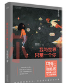

我与世界只差一个你

12个温馨治愈的情感故事，给年轻人爱的正能量和信心，让你在面对爱时无惧，怀疑爱时坚定。这些故事也许你生活中永远不会碰触，亦或许曾经经历、正在经历并且将会经历，张皓宸以电影化的手法，将故事中的人物带到你身边，你将与他们共同欢笑，共同哭泣，经历12段美妙人生。 这本书就像酒店门口的伞，遇见下雨天，告诉你别淋着，它也像一个残忍的耳光，让你沾沾自喜快忘了自己模样时狠心提醒，它还像你淹没在孤独人群里的一声叫喊，你一定会回过头。嗯，有人正在找你。【源于百度百科】
文件源于互联网，本站收集用与学习交流，如有侵权，请发送邮件至2843379680@qq.com与我联系